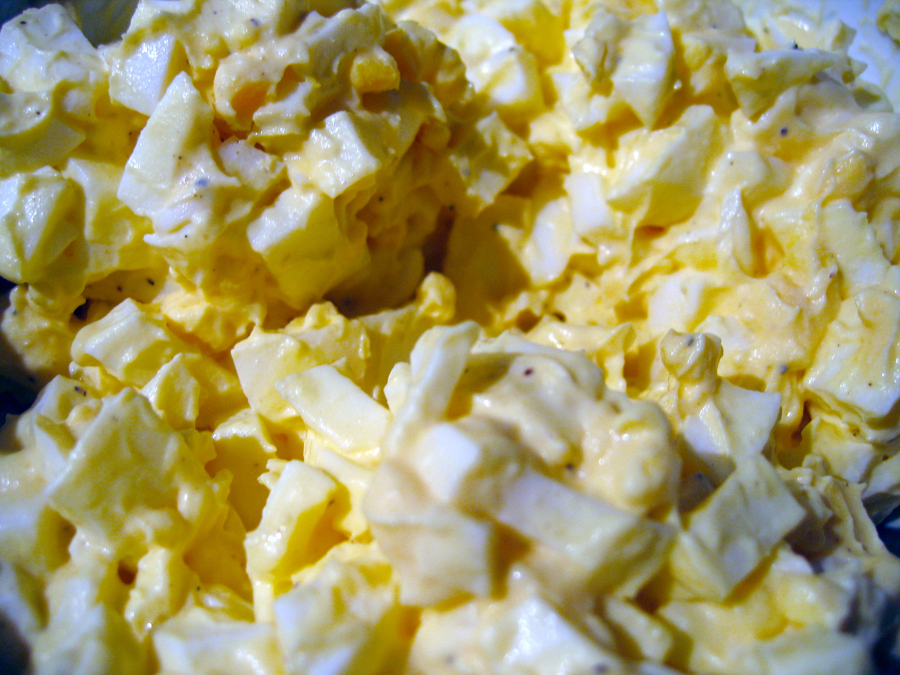

Polish Eggs Salad

Description:
This creamy-style egg salad is quite common in Poland. It has a similar consistency as egg salad with mayo but it is made with cream cheese.
Lovely in a sandwich with fresh cress.
Ingredients:
- 1 (8 ounce) package cream cheese, softened
- 1 tablespoon butter, softened, or more to taste
- 4 hard-boiled eggs, chopped
- 1 small onion, chopped
- salt and ground black pepper to taste
- 1 tablespoon chopped fresh parsley, or to taste
Steps:
- Combine cream cheese and butter in a bowl and mash with a fork. If mixture is too thick, add more softened butter.
Mix in eggs and onion. Season with salt and pepper; serve with parsley.
Back to homepage